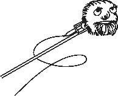

Первое интервью с Домовым
Добрый день! Благодарю вас, за то, что вы согласились дать нам интервью. Давайте сразу к нему перейдем, так как у вас, наверное, и так мало времени.
Да, в последнее время его катастрофически не хватает. Приходится заниматься и домашними делами, и вести дневник, и готовиться к свадьбе Зинаиды Захаровны.
Кстати, как вы относитесь к этому мероприятию?
Ну… Честно сказать, я к нему отношусь как к лысой резине в кладовке. Нужно сбагрить, а покупателя жалко.
Вы имеете в виду лесника Кузьмича?
Нет, что вы! (Смеется.) Кузьмич сам выбрал свою судьбу. Жалко моего друга Лешего, так как они планируют жить у него. Лешему такая резина и даром не нужна. Дело в том, что у него лес достаточно густой, и он переживает, что Зинедин своими передвижениями по нему может создать просеки, которые могут образовать, к примеру, знак «Стрелять сюда» для иноземных захватчиков. (Улыбается.) Я, конечно, понимаю, что такая гипотеза могла родиться только в голове с двумя длинными ушами, но она имеет место быть, к сожалению.
Хорошо, такой вопрос – как вы относитесь к своей набирающей обороты популярности?
Я не думаю, что стал настолько популярным, чтобы как-то к ней относиться. Но, с другой стороны, я получаю достаточно много писем от своих коллег. Вот, одно из них голуби доставили сегодня утром: «Уважаемый коллега! Какого… Вы пишете, что мы любим молоко. Моя хозяйка каждый день ставит мне миску с молоком под печку. Мало того что я вляпываюсь в него каждое утро, так у меня еще и несварение от него началось! Не могу дописать письмо, так как, кажется, снова прижима…» Но таких писем очень мало. В большинстве своем они благодарят, что хозяева стали лучше их понимать. Я этому очень рад.
Спасибо за ответ. Хотелось бы еще немного коснуться личностей членов вашей семьи. Как к вашей общественной деятельности относится Кот?
Кот – это, вообще, отдельная история. Он личность с большой буквы «К». Я сейчас процитировал его слова о нем же. Если бы его не было, то я бы уже сошел с ума от скуки. Мне импонирует его непосредственность…
Ребят, где Домовой? Только что тут сидел! У нас интервью еще не закончено!
Простите, понабрался у Халка умных слов, а их употребление иногда приводит к непредсказуемым последствиям. Так на чем я остановился? А! Кот… Кстати, всем привет от Вассермана. Кот парень интересный, в общем. Мне он нравится.
Скажите, пожалуйста, некоторое время назад он очень переживал по поводу шарундул. Вопрос еще открыт или фобия уже не дает о себе знать?
Шарундулы для Кота – это целая религия, культ. Он любит цитировать одного из классиков: лишите человека веры – и вы получите монстра. Но, на мой взгляд, лишите Кота шарундул, и вы получите Кота без шарундул. (Смеется.) Конечно же, я шучу. Мы боремся за их сохранение как можем. Так как в нашем доме их осталось всего двое… Как говорится, сохраним шарундул для наших потомков!
Что вы можете сказать о Халке?
С Халком мы знакомы гораздо меньшее время, чем с Котом, но и этого оказалось достаточно, чтобы подружиться с ним. Он парень образованный, воспитанный. Иногда, конечно, бывает занудой, но это терпимо. Существу, которое умирает по нескольку раз в день, это простительно.
Ваши читатели часто задают такой вопрос – не собирается ли Халк тоже завести свой дневник?
Тут я открою вам небольшую тайну. Дело в том, что он давно ведет какие-то записи, я не знаю, дневник это или нет, но раз в месяц за ними приходит какой-то индус в чалме и забирает их. Индус очень вежливый, здоровается со всеми, берет тетради и исчезает. Да, в мире много необъяснимых вещей.
Интересно. Скажите, а как складываются отношения у вашей Хозяйки и ее мужа после свадьбы?
Вы имеете в виду Хахаля? Я стараюсь не вникать в их личную жизнь. К Хозяйке я всегда относился уважительно, а ее выбор – это только ее выбор. Хотя, на мой взгляд, зря отменили строку: «Против всех».
Спасибо за интервью и за то, что уделили нам немного своего драгоценного времени. И напоследок расскажите о своих планах на будущее.
Ну, я повторюсь, но скажу вам, что в данный момент много времени отнимает подготовка к свадьбе. Дневник я забрасывать не собираюсь. Буду и дальше делиться своими историями с моими читателями. Надеюсь на вашу помощь в их публикации.
Благодарю вас! Всего доброго!
До свидания!
<< Вернуться.....